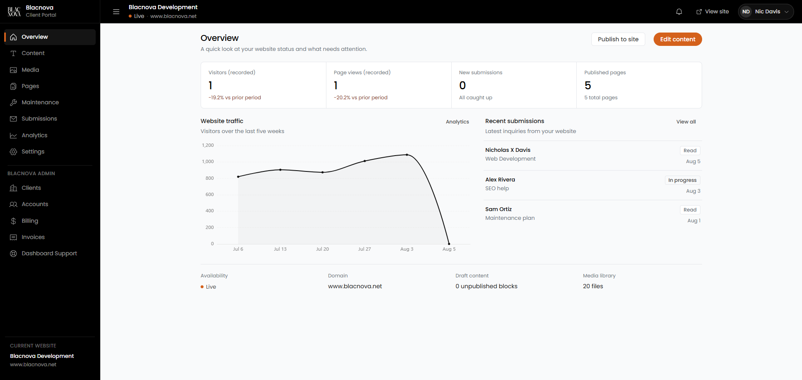
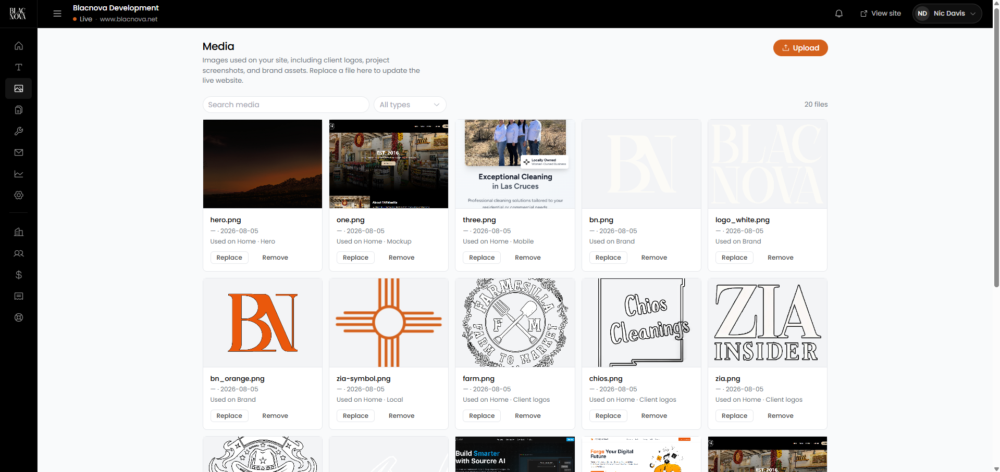
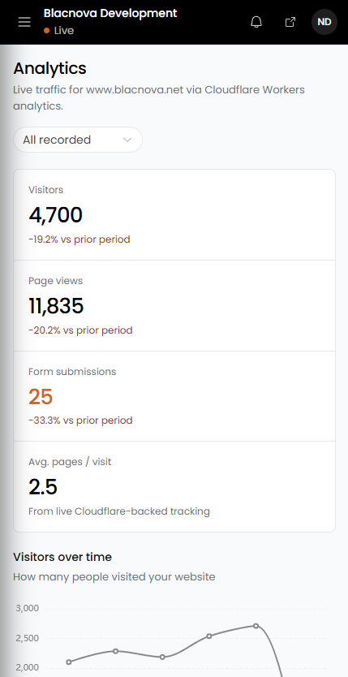
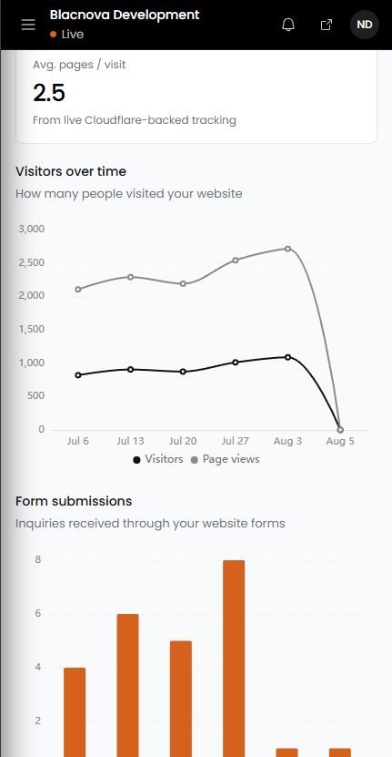

Today we are shipping something we have been building toward for a long time: the Blacnova Client Dashboard. It is the home base for every site we run. Not a generic page builder bolted on later. A real client portal, wired to our own API on Cloudflare, designed so Las Cruces and Mesilla Valley customers can manage their websites without waiting on us for every copy change, logo swap, or form inquiry.
This is a big step for Blacnova Development. The marketing site at www.blacnova.net is the front door. The dashboard is where the relationship continues after launch: content, media, traffic, submissions, and publish, in one place, on phone or desktop.

Why we built it
A website that only Blacnova can touch becomes a bottleneck. Hours change. A promo needs to go up. A client logo needs replacing. Someone fills out the contact form at 9 p.m. If every update requires an email thread and a deploy calendar, the site stops feeling like the client's business asset and starts feeling like a black box.
We also did not want to hand people a WordPress admin full of plugins, or a third-party CMS that does not match how we host and ship. Blacnova sites already lean on Cloudflare for delivery and security. The dashboard and API follow that same stack: fast at the edge, secrets out of the browser, multi-tenant from day one.
So we built our own portal. Customers log in. They see their website. They edit what they should edit. We keep the platform tooling that only Blacnova staff should see.
What the dashboard is for
At a high level, the Blacnova Client Dashboard answers four questions for a business owner or manager:
- Is the site healthy? Live status, maintenance mode, draft content, media count.
- Is anyone showing up? Visitors, page views, and trends versus the prior period.
- Did anyone reach out? Form submissions from the live site, with status you can work.
- Can I update the site myself? Content blocks, pages, media library, then publish when ready.
It is not a design studio inside a browser. Layout and engineering stay with Blacnova. Day-to-day ownership of words, images, inquiries, and visibility moves into the client's hands.
How customers get their own portal
Under the hood, every client website is a first-class record: domain, modules, status, and the accounts allowed to manage it. When we onboard a customer, we create their site in the platform, enable the modules that match their project, and issue manager logins bound to that website only.
That means:
- You do not share a master Blacnova password with five people and a contractor.
- You do not see another client's content, media, or leads.
- If a module is not part of your build (for example, maintenance tools on a simple brochure site), it does not clutter your nav.
- When someone leaves the business, we can revoke their account without rebuilding the site.
The portal lives at dashboard.blacnova.net. Sign in, and the sidebar shows your current website name and domain so there is never confusion about which property you are editing.
What you can do inside
Client navigation is modular. Typical modules include:
Overview
A status board for the week: recorded visitors and page views, new submissions that need attention, published page count, a traffic chart, recent inquiries, availability, domain, draft content, and media library size. From here you can jump into edit or publish.
Content
Edit the text blocks and structured content that power the live site. Change headlines, service copy, and other CMS-backed fields without opening a code editor. Drafts stay drafts until you publish.
Media
Upload, replace, and remove images used on the site: logos, hero shots, project screenshots, brand assets. Search and filter the library. See where an asset is used so a replace does not become a guessing game.

Pages
See which pages exist, what is published, and what still needs work. The goal is clarity: you should know what is live without asking us for a checklist.
Maintenance
Flip maintenance mode when you need a controlled downtime message instead of a half-broken page. Visitors see the maintenance experience we configured for the site; you manage the switch from the dashboard.
Submissions
Contact and quote forms on the public site post into the API with spam controls (honeypot, timing checks, rate limits). Inside the dashboard, those inquiries show up as submissions you can review and mark as you work them. No more digging through a shared inbox hoping the form email survived the spam folder.
Analytics
Deeper traffic and conversion views: visitors, page views, form submissions, average pages per visit, and charts over selectable ranges. More on that below.
Settings
Account and site preferences for the people who manage the portal day to day.
Live analytics without a third-party maze
Analytics in the dashboard are not a screenshot of someone else's product. The public site collects pageviews through our Cloudflare Workers-backed pipeline. The dashboard reads that data for the website you are logged into.
You get:
- Visitor and page-view totals with comparison to the prior period
- Form submission counts and trends
- Average pages per visit
- Visitors and page views over time
- Form submissions over time
- Ranges such as all recorded, last five weeks, or last 30 days
For a local business, that is the practical set: are people showing up, are they looking around, and are they asking for work? You should not need a separate analytics login for the basics.


The API underneath
The dashboard is a Vue application. The brain is BlacnovaAPI: a Cloudflare Worker that owns auth, data, media, public CMS endpoints, form intake, analytics collection, and publish.
A short mental model:
- Public site loads published content and maintenance state from the API, and posts forms and analytics events to public routes.
- Dashboard authenticates with a session token and talks to tenant routes for the website bound to that login.
- D1 holds structured platform data (websites, accounts, content, submissions, and related records).
- KV holds sessions and media-related storage bindings.
- GitHub Contents API is how publish lands on the live website repo when content should go public.
Secrets (GitHub tokens, Stripe keys, email credentials, webhook signing secrets) live in Cloudflare secret bindings. They are not shipped in the dashboard frontend and not committed to git. That same discipline shows up in how we secure client projects generally; the dashboard is not an exception.
Platform-only routes stay locked to Blacnova staff. Client managers never get Clients, Accounts, Billing, or Invoices in their navigation. Multi-tenant readiness is not a slide deck promise. It is how the API and router are written.
Publish without drama
Editing in the dashboard and going live are intentional steps. You can work on content, review drafts, and hit publish when the change is ready. Publish pushes to the website through the API's GitHub path so the live static site stays the source visitors actually hit, while the dashboard remains the control plane.
That split matters. Visitors get a fast, cacheable site. Clients get a managed editing experience. Blacnova keeps a clean deploy story instead of improvising FTP uploads at midnight.
Built for the phone too
Site owners do not only sit at a desk. The dashboard is usable on a phone: overview metrics, analytics charts, submission review, and navigation that collapses into a mobile drawer. If you are at a job site in Las Cruces and want to check whether a form came in, you should not need a laptop.
Client tools vs Blacnova admin
Two roles, clear boundary:
- Managers (customers) see website modules only: overview, content, media, pages, maintenance, submissions, analytics, settings, as enabled for their site.
- Platform (Blacnova staff) see those modules plus Clients, Accounts, Billing, Invoices, and Dashboard Support.
Billing and invoicing stay on the Blacnova side of the product. Customers should feel ownership of their website, not a finance console they did not ask for. When we need Stripe, invoice email, or ledger tooling, it lives behind platform auth.
Why this matters for Blacnova
Shipping the dashboard changes what we sell and how we support it.
Before, a finished website was mostly a handoff plus ongoing help when something broke or needed changing. Now, every engagement can include a living portal: the same place where we operate the platform and where the client runs day-to-day updates. Support becomes clearer. Scope becomes clearer. The site stays fresher because the people closest to the business can touch it safely.
It also locks in our stack. Website, dashboard, and API are one system. Cloudflare at the edge. Auth that respects tenant boundaries. Forms that feed a real inbox inside the product. Analytics that do not depend on a mystery script. That is the foundation we will keep extending as more client sites come online.
For Mesilla Valley businesses, the pitch stays simple: we design and build the site, we host it the way we trust, and you get a dashboard that treats the website like something you run, not something you rent back from us one email at a time.
Want a site that comes with a real client portal?
Tell us what you need online. We will scope the build and the dashboard modules that match how you actually work.
FAQ
What is the Blacnova Client Dashboard?
A private web app at dashboard.blacnova.net where each Blacnova customer manages their own website: content, media, pages, maintenance, form submissions, analytics, and publish.
Do all clients share one login?
No. Accounts are bound to a specific website. Managers only see what their site is allowed to see. Other clients' data stays out of reach.
Can I redesign the whole site from the dashboard?
No, and that is intentional. Structural design and engineering stay with Blacnova. The dashboard is for operating the site: copy, media, leads, visibility, and publish. Bigger redesigns are still project work.
Where does analytics data come from?
From our Cloudflare Workers-backed collection on the live site, surfaced in the dashboard for the website you are logged into. You get visitors, page views, submissions, and engagement trends without a separate analytics product for the basics.
Is this only for the Blacnova marketing site?
The platform is multi-tenant. We run Blacnova's own site on it first because that is the dogfood path. Client websites get the same model: a website record, enabled modules, and manager accounts.
How do form submissions stay out of spam hell?
Public form posts hit the API with honeypot fields, timing checks, origin allowlisting, disposable-email blocking, soft duplicate guards, and rate limits. Valid inquiries land in the Submissions module for review.
Who can use Billing and Invoices?
Blacnova platform staff only. Client dashboards stay focused on the website, not platform finance tools.
What ships next
This release is the foundation: auth, tenant modules, media, submissions, analytics, publish, and the platform admin surface we need to run the studio. We will keep tightening the editing experience, onboarding more client sites onto their own portals, and extending modules where real customer work demands it.
If you already work with us, your dashboard access is part of how we deliver. If you are shopping for a Las Cruces or Mesilla website that you can actually run after launch, this is the difference we want you to feel.
Request a quote · How we secure client projects · About Blacnova Development · Back to the blog